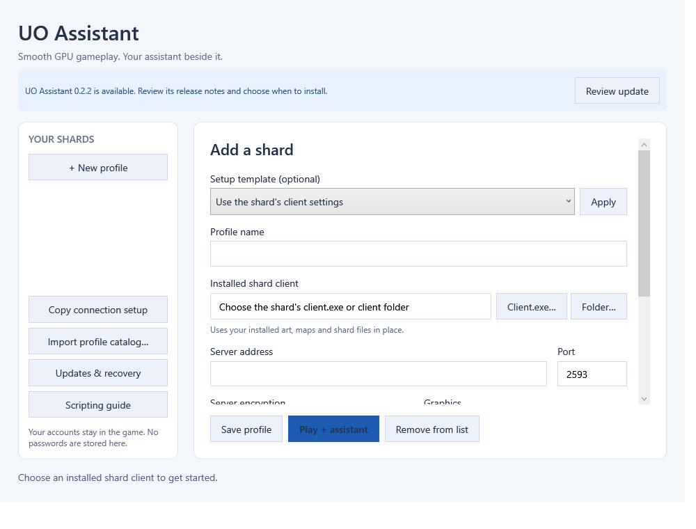

Checks in the background
A fresh launcher configuration checks www.uoassets.com at startup and every 30 minutes while the launcher is idle. Play stays available if the website is unavailable.
UO ASSISTANT / 0.2.1 / WINDOWS x64
A GPU Ultima Online client with a separate assistant window. Keep gameplay smooth, arrange your tools, bind spells and tasks, and use editable timers for each shard. The launcher now checks this website for new versions.
Unsigned development preview · 118,645,053 bytes · Runtimes included · Bring your own compatible game data

NEW IN 0.2.1
A fresh launcher configuration checks www.uoassets.com at startup and every 30 minutes while the launcher is idle. Play stays available if the website is unavailable.
A visible notice offers the newer version and release notes. Choose when to download and install. An update check never closes an active game or installs software automatically.
The launcher checks the application release signature, exact installer size, SHA-256 and version. Large files come from the project's versioned GitHub Releases downloads.
Open Updates & recovery to check manually or turn automatic checks off. Existing saved opt-outs and custom feeds are retained. Install 0.2.1 manually once if you are upgrading from an earlier preview, then review your update settings.
This development installer remains unsigned for Windows publisher identity. The updater's application release signature is a separate integrity check.
Automatic updates and recovery guide →EXPANDED ASSISTANT / 0.2.0 FEATURES RETAINED
Frame-time and performance graphs, optional OS GPU counters, navigation search, favourites, compact views, text sizing, contrast and saved window placement.
Searchable spell, skill and task hotkeys; target feedback; a bounded visual macro builder; and a JavaScript editor with parsing, completion and trace navigation.
Custom cooldown groups, bandage formulas, pet healing, passive alerts, crafting plans, play-style profiles, rotating backups and restore previews.
The native map includes categorized markers with UOAM, Ultima Mapper XML and CSV import/export, plus a preview using already-loaded terrain. This integrates compatible marker formats; it does not embed the separate Ultima Mapper program or its sharing service.
Closing the assistant closes its paired client, and closing the client closes that assistant. Login stays manual. Private profiles and settings are stored separately from installed program files. The 0.2.1 update retains the same 634 client and assistant program files as 0.2.0.
Explore the tools and their limits →LEARN TO SCRIPT
The comprehensive scripting manual explains all 44 public JavaScript methods, snapshots, target and dialog ownership, bounded tasks, imports and troubleshooting. Twelve tested examples are included.
The 0.2.0 scripting API and manual also apply to 0.2.1. The automatic-update guide describes the updated launcher.
A countdown estimates readiness. An item-use request is not a server acknowledgement. Configure timings and game rules for your shard.

GET STARTED
Use a complete, authorized Ultima Online data set and a compatible graphics driver. No game artwork, maps, accounts or shard settings are distributed. Install an update only after closing this application's game and assistant. Uninstall retains private profiles and unknown user-added files.
Full installation guide →DOWNLOAD / 0.2.1
Unsigned Windows x64 development preview. Install for the current Windows user.
Download 0.2.1 ↓118,645,053 bytes
The source README explains managed builds and the separate complete installer rebuild requirements.
Version 0.1.6 remains available with its original source and documentation.
The curated game/assistant source passed 852 isolated checks. The matching launcher passed 111 core/network checks and 14 synthetic interface checks. The final installer passed 1,118 installation, verification and removal checks, including all 1,066 payload hashes. No test account or gameplay input was used.
These results describe the tested application and installation behavior, rather than universal shard compatibility or FPS. Receiving-system gameplay, individual shard rules and interactive setup still require user acceptance. External Qodo review was unavailable because it was signed out.
Installer SHA-2564d68f017035288b7f47a253415cc9d9850b48a91c044e31c75d834eccd32461e